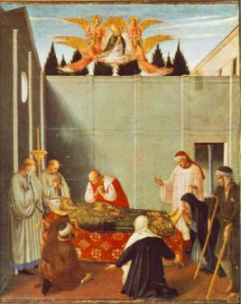

The Death of St. Nicholas
and the Miraculous Manna
Through good times and bad, he remained faithful to
the Lord and spent his time telling others about the salvation offered through
our Lord and Savior Jesus Christ and helping them in their needs.
When Nicholas had grown very old and tired, the Lord
told him in a vision that he was to be allowed to rest from his labors on
behalf of humankind. He said farewell to his people and retired to the
monastery in Myra where he’d begun his life in the Church. It was there that he
received the sacraments and waited with joy to leave this world.
“And when it pleased our Lord to have him depart out
this world, he prayed our Lord that he would send him his angels; and inclining
his head he saw the angels come to him, whereby he knew well that he should
depart, and began this holy psalm: ‘In te domine speravi,’ unto ‘in manus
tuas,’ and so saying: ‘Lord, into thine hands I commend my spirit,’ he rendered
up is soul and died, the year of our Lord three hundred and forty-three, with
great melody sung of the celestial company.” (Jacobus de Voragine, “The Golden Legend: Lives of the Saints,”
translated by William Caxton, p. 69)
The Vita Per Michaëlem proclaims: “Having thus perfectly administered
the metropolitan church of Myra, and diffused the perfume of a holy life all
round him, he left this perishable existence for the place of unending rest
where, among the choirs of angels, one with the patriarchs, he shares their
joy, ever interceding for those who invoke him with faith and piety, and
especially those involved in distresses or public calamities.”
According to the Vita
Per Metaphrasten by St. Simeon Metaphrastes,
“Now after he had long lived in this manner, renowned
for his virtuous conduct, he asperged the metropolis of Myra with sweet and
lovely unction distilled from the blossoms of divine Grace. When he came to the
very advance age, full of days both heavenly and earthly, he need must comply
with the common law of nature, as is man’s lot. He was ill but a short time. In
the grip of that illness, while rendering those lauds and thanksgivings to God
which are said in death, he happily yielded up his spirit [for while he desired
to remain in the flesh, Nicholas equally desired to be unyoked from it]. He
left this brief and transitory life to cross over to that blessed everlasting
life where he rejoices with the angels while more clearly and openly
contemplating the light of Truth. But his previous body, borne by the holy
hands of bishops and all the clergy with torches and with lights, was rested in
the crypt which is at Myra.”
The monks who were assembled around him all declared
that they saw with their own eyes a throng of patriarchs, Saints, angels and
archangels who came to carry him to his home in Heaven.
Love for Nicholas grew rapidly after his death. The
day was set aside in honor of the one whose good works and deeds lived on in
the hearts of the people he had served. People referred to him as a Saint long before the Church officially
began to canonize early Christians.
The people of Myra buried him in a beautiful tomb
within a church that became the first of hundreds to bear his name. Stories of
his generosity and miracles were told far and wide, and pilgrims came from long
distances to visit his burial place, particularly on December 6th,
his Feast Day. By the eleventh century, St. Nicholas’ was one of the most
visited Christian tombs in the world.
The Manna of Myra: A body of oral tradition
formed around miracles associated with his tomb, most notably the fact that the
tomb oozed an oil or balm (commonly called manna) with healing properties. In The Golden Legend we find:
“And when he was buried in a tomb of marble, a
fountain of oil sprang out from the head unto his feet; and unto this day holy
oil issueth out of his body, which is much available to the health of
sicknesses of many men. And after him in his see succeeded a man of good and
holy life, which by envy was put out of his bishopric. And when he was out of
his see the oil ceased to run, and when he was restored again thereto the oil
ran again.” (Jacobus de Voragine, The Golden Legend: Lives of the Saints,
translated by William Caxton, p. 69)
His venerable relics were preserved undecayed in the
local cathedral church and flowed with curative myrrh, from which many received
healing. In the year 1087 his relics were transferred to the Italian city of
Bari, where they rest even now.
Not only ailments of the body but also of the soul were healed, and evil spirits were expelled by this holy manna. Thus, Nicholas warred against demons and conquered them not only during his life, but also after his death, as he conquers also now.
According to Robert Wace, a noble baron wishing to
take to his country a relic of the Saint, tried to take a tooth. This
displeased the Saint who made this manifest by the unceasing flow of manna from
the case and wrappings of the tooth. Nicholas also appeared in a dream at night
to the baron saying that his body must not be divided. When the baron awoke, he
found that the tooth had disappeared.
Thought to Ponder: The psalm that St. Nicholas
was saying as he died, he’d learned by heart. In full, it reads:
“In the Lord I put my trust; how can you say to my soul, ‘Flee as a bird to your mountain’? For look! The wicked bend their bow, they make ready their arrow on the string, that they may shoot secretly at the upright in heart. If the foundations are destroyed, what can the righteous do? The Lord is in His holy temple, the Lord’s throne is in heaven; His eyes behold, His eyelids test the sons of men. The Lord tests the righteous, but the wicked and the one who loves violence His soul hates, upon the wicked He will rain coals; fire and brimstone and a burning wind shall be the portion of their cup. For the Lord is righteous, He loves righteousness; His countenance beholds the upright.”
Thought to Discuss around the Dinner Table: What portions of Scripture
have we memorized to help us through trying times? Mine is 1 John 1:9 – “If we confess our sins, He is faithful and
just to forgive us our sins and to cleanse us from all unrighteousness.”
Discuss with your children verses that you all
need to memorize this year.
The Death of St. Nicholas
and the Miraculous Manna
